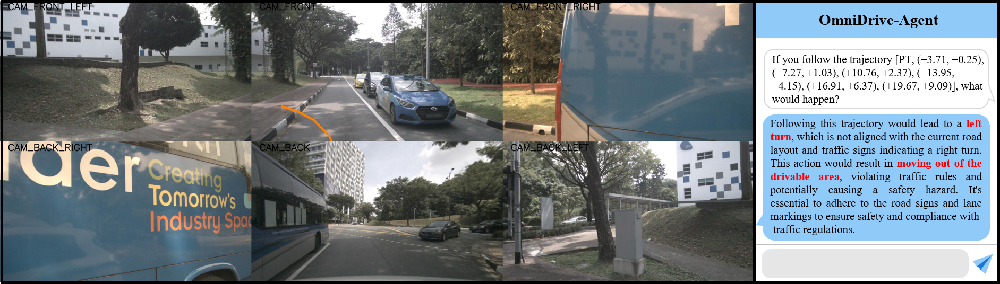
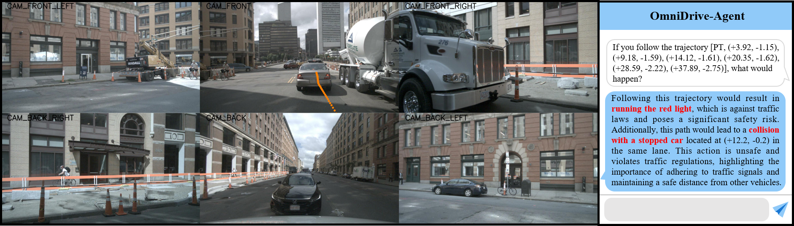

Qualitative Results
OmniDrive is capable of effectively planning and reasoning within 3D space, making it ideal for complex driving scenarios. It can navigate diverse environments, handle dynamic obstacles, and optimize routes in real-time, ensuring safe and efficient travel.

Figure 4: OmniDrive-Agent planning example 1.

Figure 5: OmniDrive-Agent planning example 2.

Figure 6: OmniDrive-Agent conversation example.

Figure 7: OmniDrive-Agent counterfactual reasoning example 1.

Figure 8: OmniDrive-Agent counterfactual reasoning example 2.